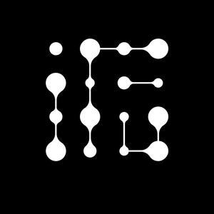
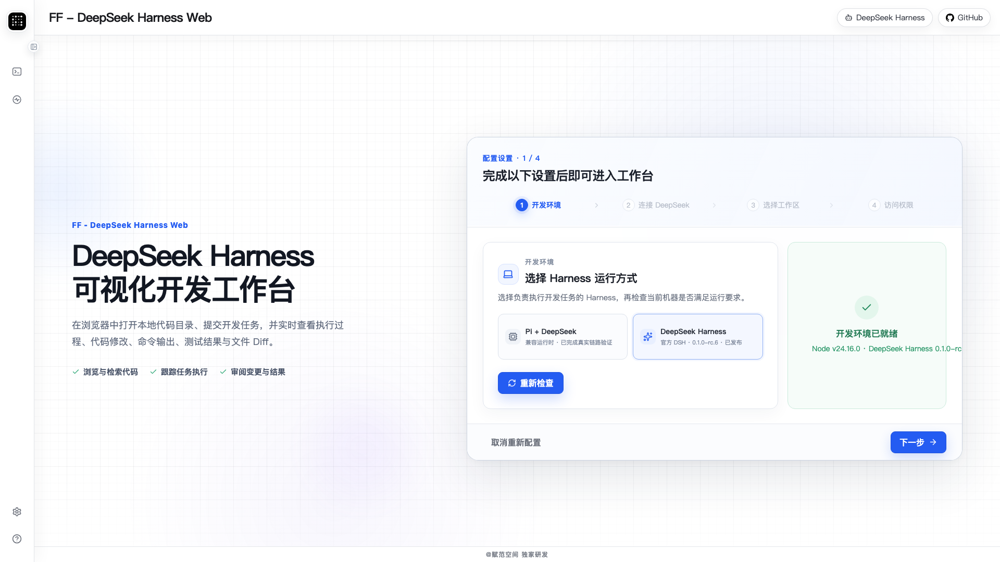
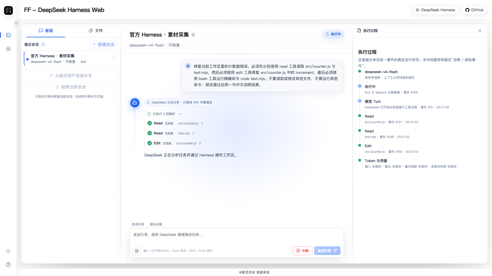
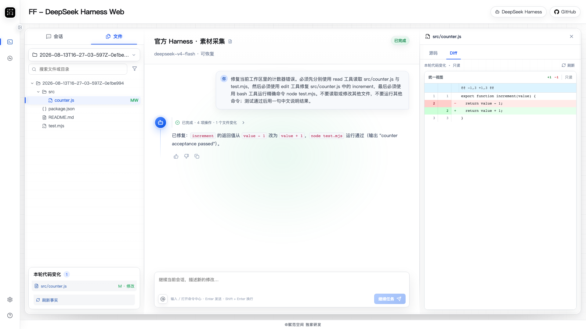
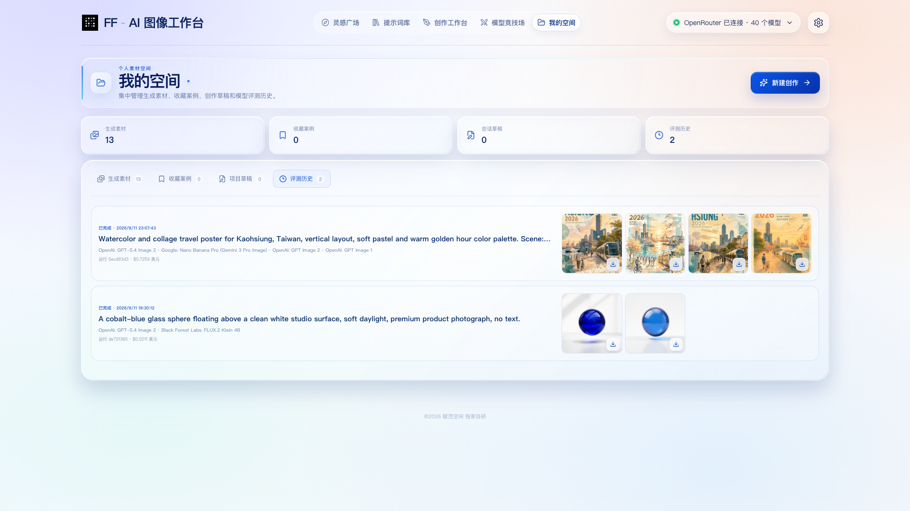

FF - DeepSeek Harness Web浏览器里的真实开发工作台
DeepSeek Harness
让 DeepSeek
让 DeepSeek
真正进入项目
从配置、执行到文件验证，完整开发链路都在浏览器里发生。

视觉方向 · 深蓝光场与真实界面
FF - DeepSeek Harness Web官方 DeepSeek Harness
真实开发过程
每一步执行，
每一步执行，
都有迹可循。
分析、读取、修改、验证，在同一条时间线上持续发生。
分析任务读取代码修改文件运行验证

DeepSeek 正在执行真实任务
视觉方向 · 界面成为可进入的空间
FF - DeepSeek Harness Web从代码变化到运行结果
从代码，到运行中的产品。
Diff、构建结果与真实产品画面共同完成闭环。

构建通过

视觉方向 · 证据完成最终落点